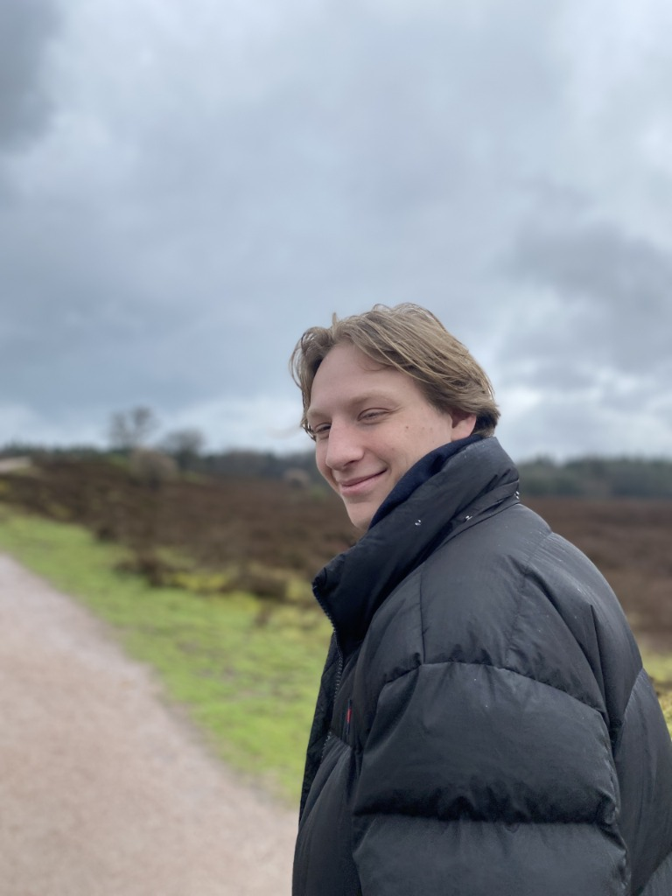
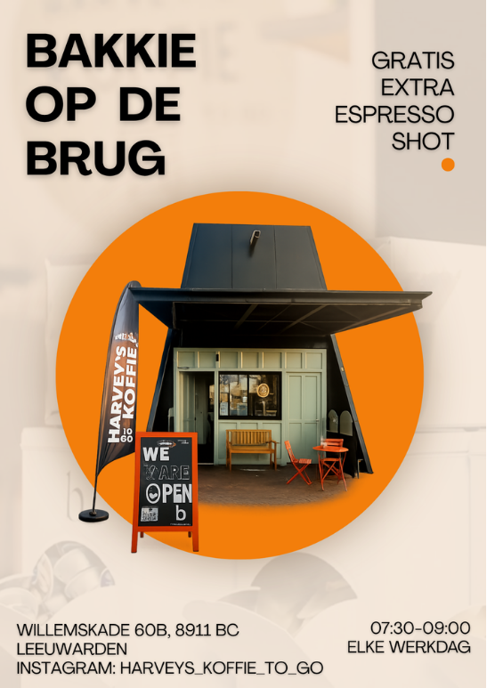

Student Event Management met een passie voor conceptontwikkeling. Ik krijg energie van het bedenken en ontwikkelen van creatieve concepten die mensen, organisaties en locaties met elkaar verbinden. Van een eerste idee tot een herkenbare identiteit en een ervaring die daadwerkelijk impact maakt.
Bekijk Projecten Neem Contact Op
Het bedenken en ontwikkelen van onderscheidende concepten en ervaringen.
Het vertalen van ideeën naar een herkenbare identiteit en sterke positionering.
Het creëren van verbinding tussen mensen, organisaties en hun omgeving.
Van Grote Kerk naar Stadsklooster: een historische plek met een nieuwe toekomst.
Binnen dit project onderzochten we hoe het ongebruikte Broodpoortje kon uitgroeien tot een toegankelijke plek voor ontmoeting, inspiratie en levendigheid. Met placemaking zochten we naar manieren om de verbinding tussen deze bijzondere locatie en de stad Leeuwarden te versterken.
Een offline marketingcampagne voor Harvey's Koffie To Go in Leeuwarden.
Om zich te onderscheiden van concurrenten werd het concept "Bakkie op de Brug" ontwikkeld. Tijdens werkdagen kregen voorbijgangers tussen 07:30 en 09:00 een gratis espresso shot aangeboden op een drukke route naar werk en studie.

Van Innovolab naar ClimateBridge: een brandingconcept ontwikkeld vanaf de basis.
Binnen dit project ontwikkelden we een nieuwe merkidentiteit voor ClimateBridge, een initiatief gericht op het verbinden van studenten, ondernemers en organisaties rondom duurzame innovatie in Tanzania.
Vanuit het bestaande initiatief van Innovolab werkten we aan een vernieuwd merkconcept, inclusief een eigen logo en visuele identiteit. Het doel was om het initiatief een herkenbare en onderscheidende uitstraling te geven.
Bekijk de huidige website van ClimateBridgeSinds 2023 studeer ik Eventmanagement aan NHL Stenden. Ik heb bewust voor deze opleiding gekozen omdat ik gefascineerd ben door de impact die ervaringen en evenementen kunnen hebben op mensen. Of het nu gaat om een zakelijke bijeenkomst, een community-evenement of een festival, elke ervaring laat een indruk achter. Juist dat maakt het vakgebied voor mij zo interessant.
Ik haal veel energie uit het contact met mensen en het begrijpen van hun behoeften, verwachtingen en motivaties. Door goed te luisteren en te observeren ontdek ik wat mensen verbindt en wat een ervaring écht waardevol maakt. Deze dynamiek zorgt ervoor dat je als eventprofessional continu moet blijven onderzoeken, ontwikkelen en innoveren.
Tijdens mijn studie heb ik mij daarnaast verdiept in branding, marketing en strategische communicatie. Hier leerde ik dat branding en marketing vaak met elkaar worden verward, terwijl ze juist verschillende rollen vervullen. Branding vormt het fundament van een organisatie: de identiteit, waarden en het verhaal van binnenuit. Marketing vertaalt dit vervolgens naar de buitenwereld en zorgt ervoor dat de juiste doelgroep wordt bereikt. Wanneer beide disciplines goed op elkaar zijn afgestemd, ontstaat een sterke en consistente merkbeleving.
Deze combinatie van eventmanagement, branding en communicatie komt terug in de projecten die ik uitvoer. Ik werk graag aan concepten die niet alleen creatief zijn, maar ook betekenisvol, strategisch onderbouwd en gericht op het creëren van blijvende impact.
Creativiteit, ondernemerschap en verbinding vormen de basis van hoe ik werk.
Ben je op zoek naar een enthousiaste Student Event Management voor een project, stageplaats of samenwerking?
maurice.jc.boschma@outlook.com
Neem Contact Op